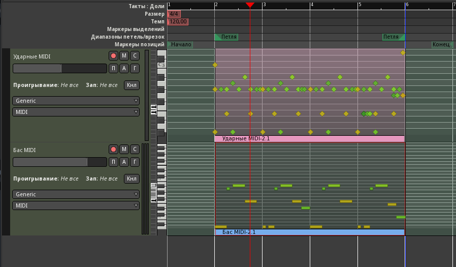
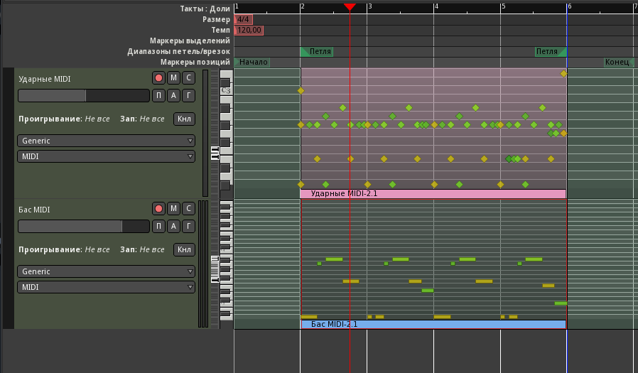

У нас есть два инструмента - бас и ударные, а значит, можно вознаградить себя за усердие и наконец-то написать несколько тактов нашей будущей композиции. Начинать будем не с начала, а с некоторого абстрактного куска где-нибудь посередине, который потом дополним вступлениями, развитием темы, отступлениями и дополнительными частями. На этом этапе будет выбрана тональность и темп.
Переключимся в редактор MusE нашей комнаты Эксперименты, чтобы создать пару простеньких рисунков для канала 1 (бас) и 10 (ударные). По щелчку правой кнопки на пустом месте в заголовках дорожек компоновщика выбираем Добавить трек ударных и называем его Drums. Повторяем операцию, но теперь добавляем MIDI-трек, называем его Bass. По умолчанию должны выбраться правильные каналы и MIDI-порт jack-out для обеих дорожек.

Воспользовавшись карандашом на панели инструментов (или нажав D), нарисуем клипы на этих дорожках. Длина - 4 такта, от 2 до 6, а один такт в начале оставим для предварительного отсчёта. Сменим курсор обратно на стрелку, нажав A или на соответствующую кнопку панели.

MusE предоставляет широкие возможности по расположению окон, воспользуемся ими. В меню Настройки/Общие настройки/Стиль ГИП выберем пресет MDI в стиле Cakewalk. Теперь уберём разворачивание с окна компоновщика и расположим его где-нибудь слева на половину области дочерних окон. При двойном щелчке на каждом из клипов откроем драм- и пиано-роллы (можно также редактировать в режиме партитуры, выбрав соответствующий пункт из контекстного меню). Расположением окон и подгонкой масштаба можно сделать так, чтобы редакторы ударников и баса совпадали по вертикали, это упростит дело при коррекции нот мышкой.

Отредактируем названия ударников. В драм-ролле MusE они начинаются с Acoustic Bass Drum, что соответствует ноте B2, а в Fable ноты начинаются с C3, так что просто скроем первый барабан правым щелчком на названии и выбором скрыть этот инструмент. Теперь сверху вниз у нас 16 дорожек, соответствующие 16 ячейкам Fable. Переименуем их двойным щелчком по названию, как показано на рисунке. Звёздочками обозначены пустые ячейки. Можно заметить, что инструменты звучат при выделении.

Но при запущенном воспроизведении звука не будет. Происходит это потому что Ardour синхронизирован с MusE по JACK, и воспроизведение включается там тоже. А во время воспроизведения дорожки Ardour обычно слушают входы MIDI, только если только на них включен мониторинг входа. Кроме того, Ardour плохо соединяет начало и конец цикла при синхронизации по JACK. Поэтому, пока работаем в MusE синхронизацию в Ardour надо переключать на внутреннюю, нажав соответствующую большую кнопку на панели инструментов.

Чтобы зациклить некоторый промежуток, правой кнопкой мышки нажимаем на цифре окончания цикла на шкале тактов ударников, а затем средней кнопкой на цифре начала. Это переместит границы, обозначенные синими стрелками. Режим цикла включается кнопкой на тулбаре.
Теперь можно включить метроном и записать с MIDI-клавиатуры рисунки для одного такта баса и ударных. Поставим курсор воспроизведения в начало и нажмём кнопку записи на тулбаре. Также включим запись для нужного трека в столбце R. Клипы можно удалить (это закроет пиано-роллы): всё равно будут записываться новые. После записи ноты можно отквантовать средствами MusE.
При создании басовой партии учитываем, что она должна перекликаться с бочкой, ноты надо начинать либо одновременно с бочкой, либо обыгрывать сильные и слабые доли такта чередованием бочки и баса - в общем, играть так, будто это один сложный инструмент. Кроме того, не стоит увлекаться мелодической линией. Бас - инструмент тяжёлый, и перетянет на себя функции лидирующей партии, а аккомпанементу останется либо настаивать на тонике, либо модулировать и оттенять бас.
Это в идеале, а в реальности получилось показанное на скриншоте. Скопируем этот такт на три последующих и немного подправим с вариациями.


Теперь импортируем результат на дорожки Ardour и продолжим редактирование там. Можно было бы сохранить из MusE в формат .mid, но мы попробуем эти дорожки просто записать.


Находясь в Ardour, запустим воспроизведение и остановим где-нибудь на тишине после шестого такта. Когда готово, деактивируем запись на дорожке ударных. Повторим процедуру для дорожки Бас MIDI, не забыв в MusE снять соло с ударных и включить его на треке Bass. Режим перкуссии включается в контекстном меню трека Режим представления нот/Перкуссия.
 

Результат почему-то немного опережает время. Выделим все ноты в каждом клипе инструментом правки содержимого областей (кнопка E) и сместим их чуточку вправо, взявшись за какую-нибудь ноту. Затем уменьшим размеры клипов слева и справа до сетки тактов (2-6) инструментом Захват (палец). Через контекстное меню клипа ударных (MIDI/Квантование) можно добавить немного свинга (20%-30%).

Готовый экспортированный из MusE MIDI-файл можно скачать здесь.